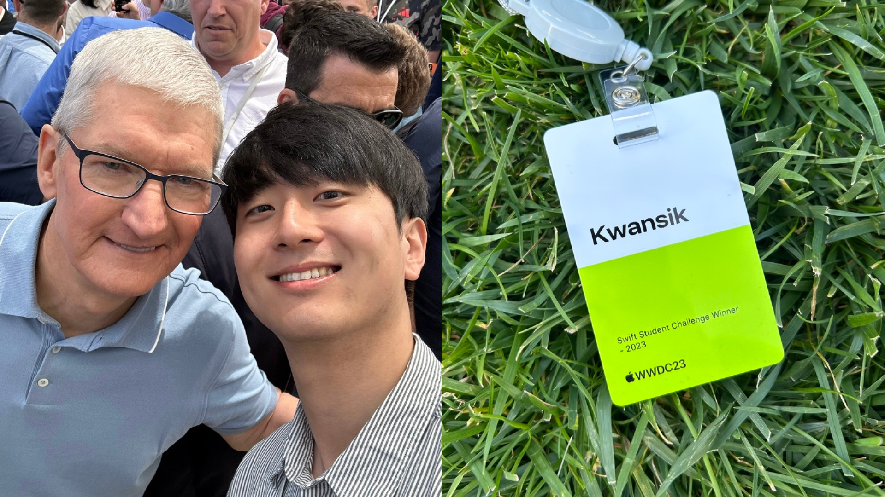
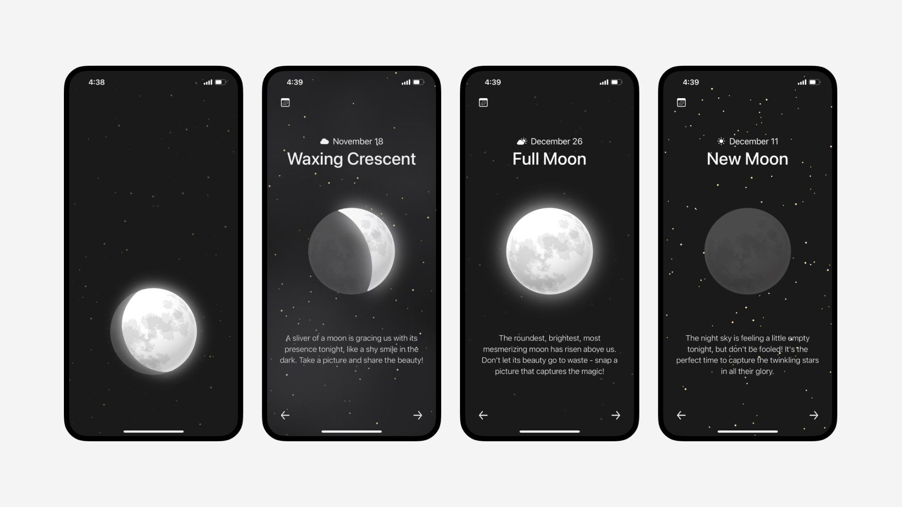
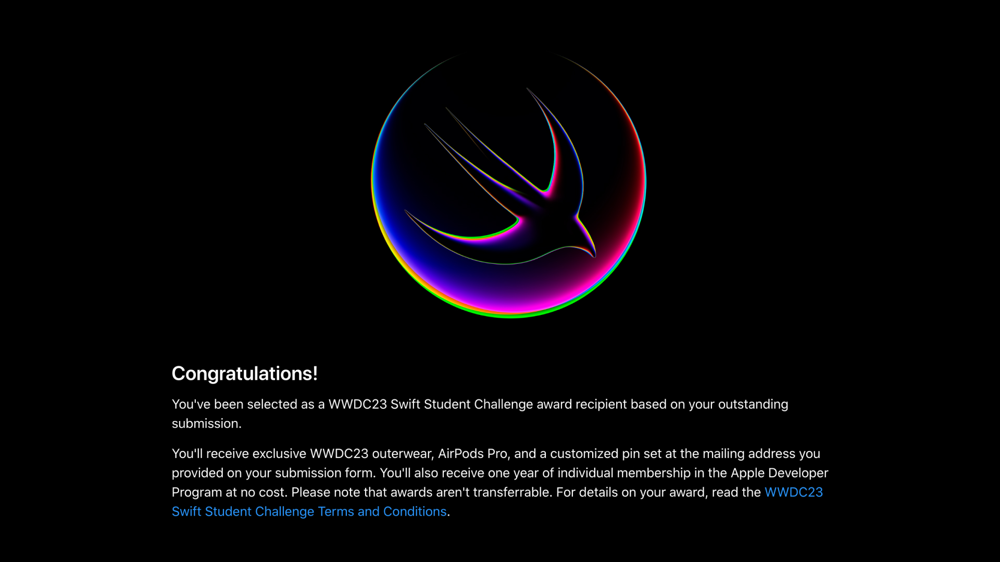
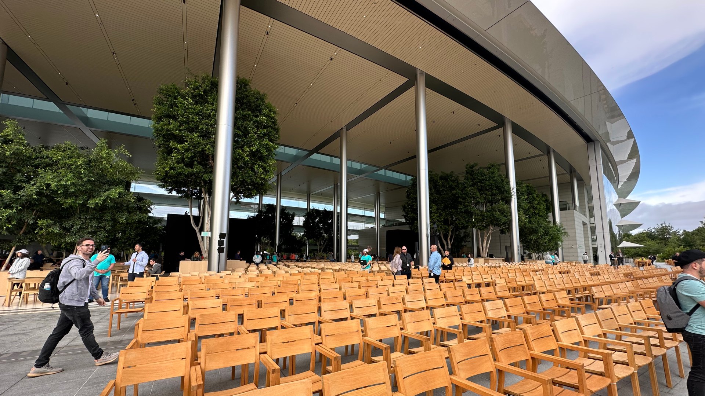
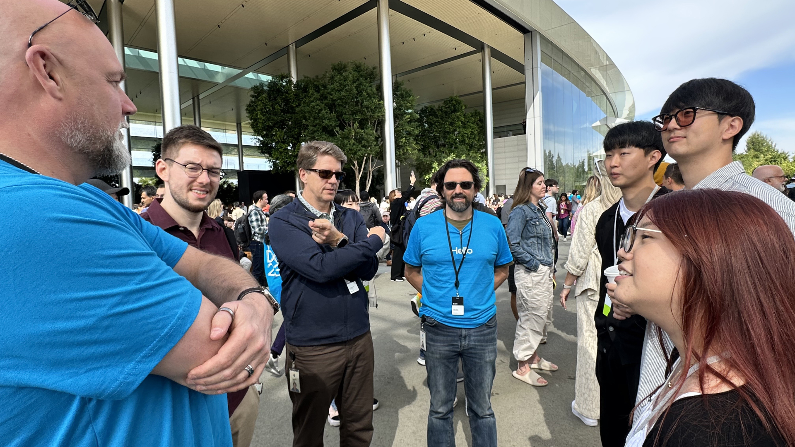
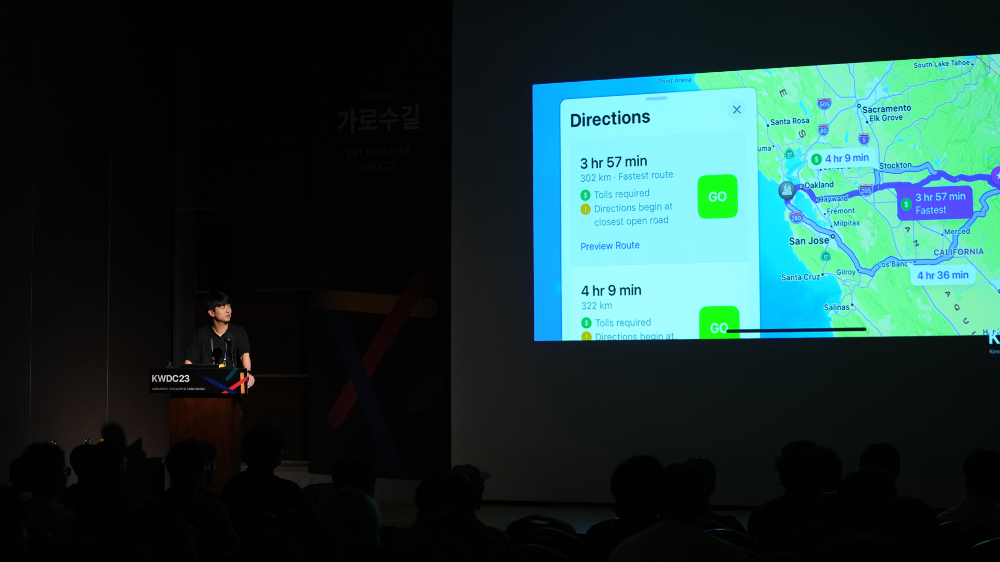

Apple에서 주최하는 Swift Student Challenge에서 우승하여, 전 세계 개발자들이 모두 모이는 WWDC23에 초대받아 Cupertino의 Apple Park에서 열리는 컨퍼런스 행사에 참여했습니다. 컨퍼런스에 참여하며 Apple과 미국에서의 새로운 경험들을 할 수 있었으며, 그 경험들을 KWDC23에서 발표하는 기회도 갖게 되었습니다.

달 위상 관측 앱(MellowYellows) 디자인 및 개발
Swift Student Challenge 오늘의 달 위상을 시각적으로 확인할 수 있는 달 관측 앱을 디자인하고 SwiftUI를 활용하여 직접 개발했습니다. 보름에 가까워질수록 별의 밝기가 어두워지고 그믐이 될수록 별의 밝기가 밝아지는 등, 실제 밤하늘의 모습을 시각적으로 앱에 담았습니다.

몰입도 있는 애니메이션 효과와 배경음악
달이 떠오르고 별이 움직이며 구름이 끼는 등 부드럽고 자연스러운 애니메이션을 통해 실제 밤 하늘을 바라보는 듯한 효과를 주었습니다. 또 잔잔하고 평화로운 배경음악을 더해 더 몰입도 있게 앱을 사용할 수 있는 환경을 구성했습니다.
달이 떠오르는 표현
움직이는 별 표현
흐린 날 구름 표현
Swift Student Challenge 우승
MellowYellows를 Swift Student Challenge에 제출했고 운이 좋게도 세계 여러 나라의 학생들과 함께 우승작에 선정될 수 있었습니다. 그뿐만 아니라 Apple의 Cupertino 본사에서 열리는 WWDC23에 초대받아 현장에서 컨퍼런스를 참여할 수 있는 기회를 얻었습니다.

Apple Park에서 WWDC23 참여
Apple Park에서 열리는 WWDC23에 직접 참여하며 Vision Pro를 비롯한 여러 신제품들과 iOS, MacOS, WatchOS 등 새로운 소프트웨어 발표를 현장에서 확인할 수 있었습니다. 또 Swift와 SwiftUI 등 여러 개발 프레임워크들의 발표를 들으며 새로운 기능들을 가장 먼저 접할 수 있었습니다.

전 세계 개발자들과 Apple 팀과의 대화
컨퍼런스에 참가하며 전 세계의 다양한 개발자들과 Apple 팀을 만나 새롭게 발표된 제품과 기술들에 대한 대화를 나눌 수 있었습니다. 다양한 주제에 대한 각자의 의견을 나누며 Apple과 Apple의 팬들이 추구하는 가치와 방향성을 엿볼 수 있는 기회가 되었습니다.

KWDC23 연사자로 참가하여 발표
미국을 다녀온 후, 한국의 모든 애플 커뮤니티가 함께 진행하는 컨퍼런스인 KWDC23에서 연사자로 참가하여, WWDC23을 다녀오며 직접 경험했던 Apple 생태계와 미국 내에서의 서비스 경험들에 대해 발표했습니다.

새로운 경험으로부터의 성장
개발을 처음 접하며 내가 디자인한 앱을 직접 개발하는 것, 미국과 Apple을 직접 가보고 다양한 관계자들과 대화를 해본 것, 커뮤니티 행사에서 많은 사람들 앞에서 발표를 했던 것, 모든 것이 다 처음 하는 신선했던 경험들이었습니다. 이 새로운 경험들은 디자인과 개발뿐만 아니라, 다양한 측면에서 더 넓은 시야를 갖게 해주었고, 커리어적으로도 많은 자극을 받을 수 있는 계기가 되었습니다.